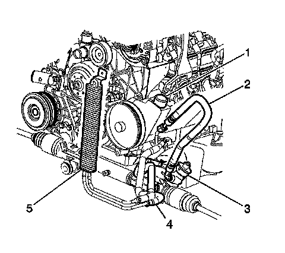
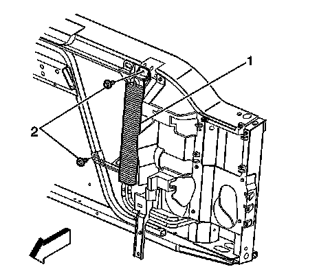

Power Steering Cooler Pipe/Hose Replacement (Without Hydroboost)
Power Steering Cooler Pipe/Hose Replacement (Without Hydroboost)
Removal Procedure
1. Remove the front grille.
2. Remove the radiator air baffle and deflector-upper.
3. Remove the radiator grille reinforcement support.

Notice: Refer to Power Steering Hose Disconnected Notice.
4. Remove the power steering gear outlet hose (4) from the cooler.
5. Remove the power steering cooler hose from the power steering pump (1).

6. Remove the bolts (2) retaining the cooler to the radiator support.
7. Remove the power steering cooler from the vehicle.
Installation Procedure
Notice: Refer to Fastener Notice.
1. Install the power steering cooler (1) to the vehicle.
Tighten the power steering cooler retaining bolts to 9 N.m (80 lb in).
2. Connect the power steering cooler hose to the power steering pump (1) and reposition the clamp.
3. Connect the power steering gear outlet hose (4) to the cooler.
Reposition the retaining clamp.
4. Bleed the power steering system. Refer to Power Steering System Bleeding.
5. Inspect all the hose connections for leaks.
6. Install the radiator grille reinforcement support.
7. Install the radiator air baffle and deflector-upper.
8. Install the front grille.